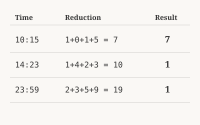

There are no coincidences. What began as a simple intuition while walking to work one morning has revealed a complex, repeating heartbeat beneath the surface of our clocks.
I had a hunch about time itself—that beneath the arbitrary numbers of our digital displays, there might be hidden structural patterns. I started doing calculations in my head using mathematical reduction, the practice of adding digits together until reaching a single number.
When I got to my desk, I built a spreadsheet to track the values for every single minute in a 24-hour cycle—all 1,440 of them. As the rows populated, the data didn't gradually whisper. It jumped to life immediately. What appeared wasn't noisy static; it was absolute architecture.
The Rule of Reduction
The core framework relies on digital root reduction. You take any multi-digit number on the clock and add its digits together. If the result still has multiple digits, you add those together too, repeating the process until you land on a single number between 1 and 9.
For every minute of the day, you can isolate three distinct values: the hour reduced, the minute reduced, and the grand total of all four numbers combined.

As seen above, 10:15 reduces cleanly to 7, while complex times like 23:59 fold down to 10, and finally collapse to 1.When you map all 1,440 minutes this way, a running thread emerges. Woven into every scale of the day—governing the waves, the shifts, and the alignments—is the consistent appearance of the number nine. It stands as the mathematical foundation of the entire system.
In this series, I am exploring this numerical framework through a quiet, contemplative lens. We aren't looking at empty quantities here, but structural qualities. The mathematics stand completely on their own—what meaning you choose to assign to the rhythm is entirely up to you.
The Journey Ahead
We will traverse nine distinct stages of discovery across this series, moving step-by-step from local rhythms to the grand scale of the day. You can follow the path sequentially as it unfolds below: